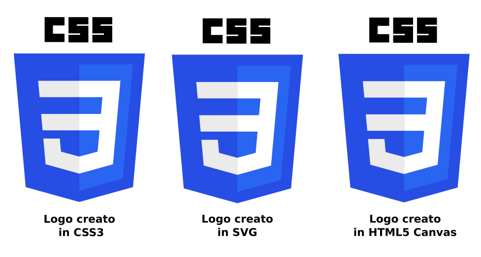

Sintaxis y Selectores CSS
El lenguaje de programación CSS está enfocado en suplir la función de diseño gráfico dentro de la construcción de un sitio Web, prácticamente es el grupo de herramientas utilizado para dar formar y estructura visual a la elaboración de páginas web. CSS es la separación de la estructura y el diseño, la importancia de su aplicación esta detalla en la reducción del código fuente para trabajar por separado el aspecto visual del sitio web, de esta manera la funcionalidad y apariencia estarían separadas disminuyendo las líneas de código fuente y la dimensión en tablas. El coste en el tráfico de datos es notablemente disminuido por medio de la optimización al aplicar CSS lo que prioriza la sintaxis para disminuir las diferentes instrucciones que compongan el código.
Schulz, R. G. (2008). Diseño web con CSS. Marcombo.